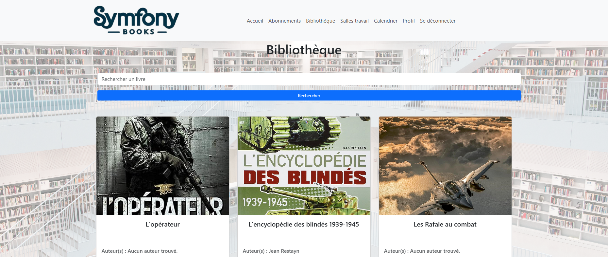
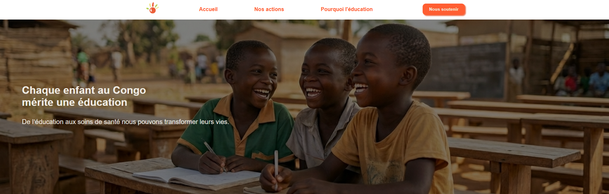
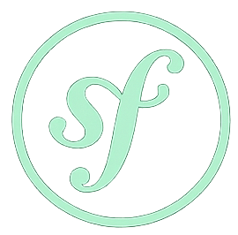
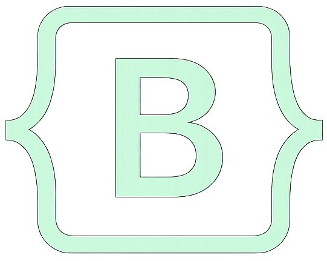
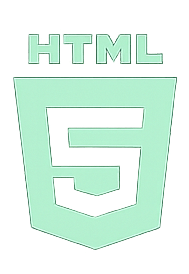
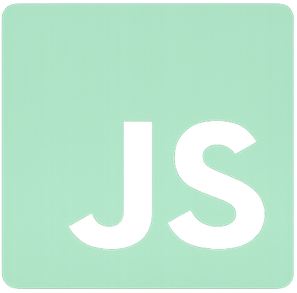

Mes projets
Découvrez mes réalisations en développement web
Présentation
Voici une sélection de projets que j'ai réalisés au cours de ma formation et de mes expériences professionnelles. Ces projets mettent en avant mes compétences en développement web, ma créativité et ma capacité à résoudre des problèmes techniques.

Symfony Book

C'est une application web de gestion de bibliothèque développée avec le framework Symfony. Elle permet aux utilisateurs de consulter le catalogue de livres, d'emprunter des ouvrages et de gérer leur compte utilisateur.
Perle du Niari

C'est un site vitrine pour une association qui aide les enfants défavorisés à accéder à l'éducation et aux ressources nécessaires pour leur développement au Congo.
Mike Sylla

C'est un site E-Commerce développé avec le framework Symfony. un site de vente en ligne de vêtements luxe hommes, femmes. Il propose une interface conviviale, un catalogue de produits varié et un système de paiement sécurisé.
Symfony Book
Symfony Book est une application web de gestion de bibliothèque développée avec le framework Symfony. Elle permet aux utilisateurs de consulter le catalogue de livres, d'emprunter des ouvrages et de gérer leur compte utilisateur.
Fonctionnalités principales :
- Catalogue de livres avec recherche avancée
- Gestion des emprunts et des retours
- Interface d'administration pour la gestion des livres
et des utilisateurs
Technologies utilisées :




Perle du niari
Perle du niari est un site vitrine pour une association qui aide les enfants défavorisés à accéder à l'éducation et aux ressources nécessaires pour leur développement au Congo.
Fonctionnalités principales :
- Présentation de l'association et de ses missions
- Informations sur les projets en cours
- Possibilité de faire des dons en ligne
Technologies utilisées :



Mike Sylla
Mike Sylla est un site E-Commerce développé avec le framework Symfony. un site de vente en ligne de vêtements luxe hommes, femmes. Il propose une interface conviviale, un catalogue de produits varié et un système de paiement sécurisé.
Fonctionnalités principales :
- Catalogue de produits avec filtres avancés
- Gestion des commandes et des paiements
- Interface d'administration pour la gestion des produits et des commandes
Technologies utilisées :